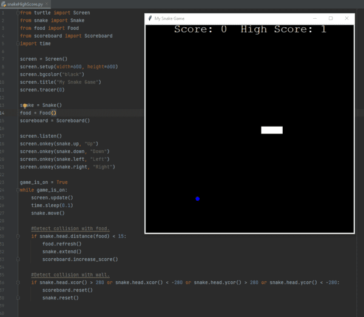
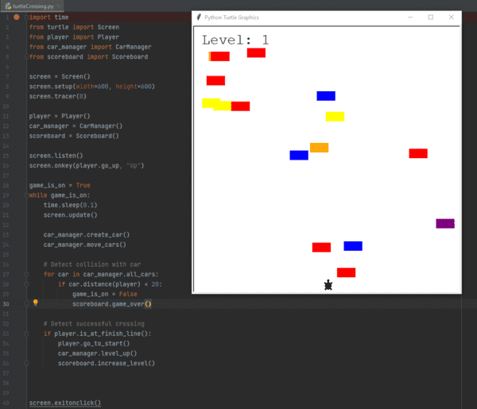
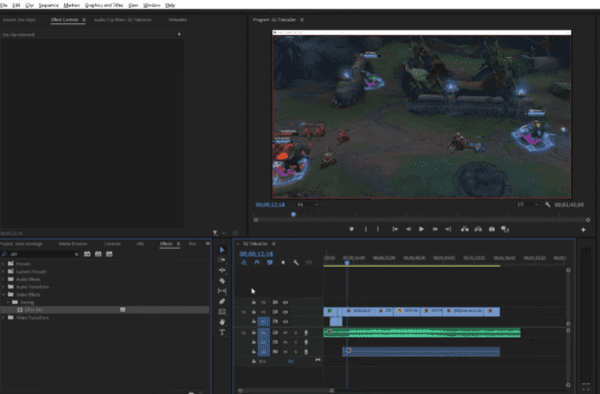
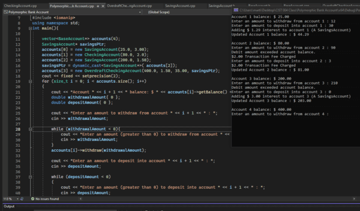
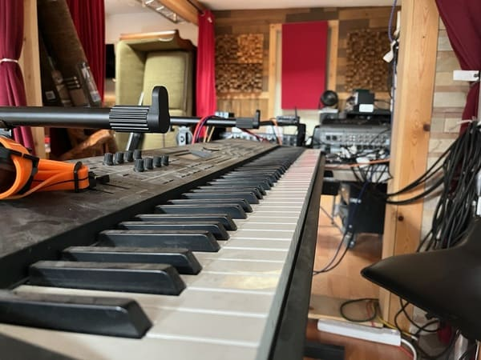
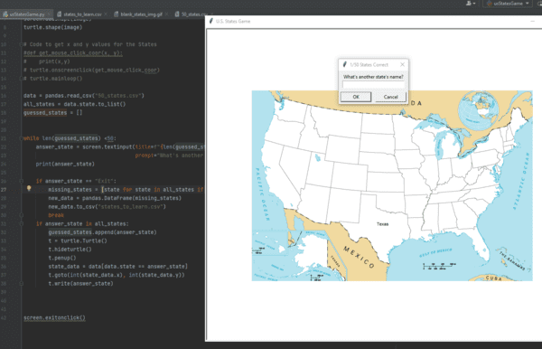
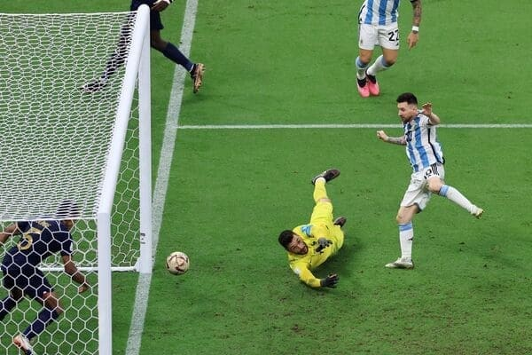
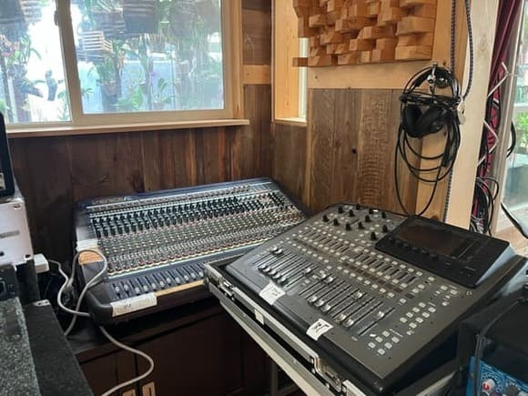
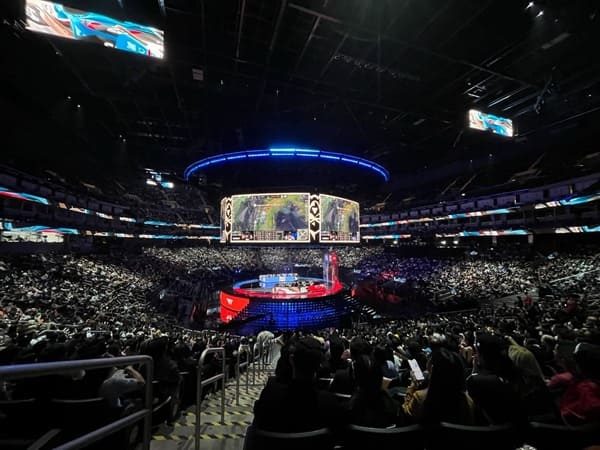
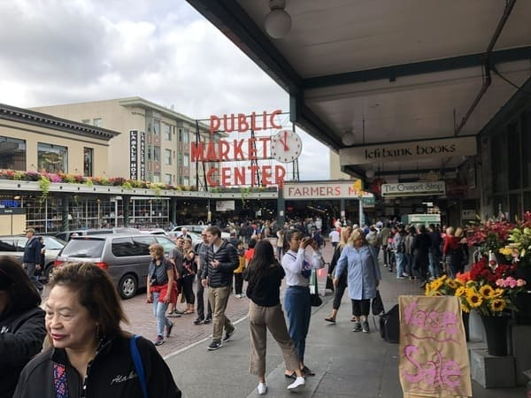

This is another project showing the game Snake written in Python. This version of the code also has a
high score tracker.

This is Python project showing a game of a turtle crossing the road. The game also includes different levels, And
a high score tracker.

Another hobby of mine is that I also do video editing. So this is a screenshot of some editing software.

Project of a bank account using inheritance and polymorphism in C++.

Synthesizers are the only instrument that I know how to play. This is mainly to help with
DJing during parties.

Python project using a csv file to create a quiz game to learn about the US states.

Watching soccer is my favorite pastimes. Unfortunately theres not a lot of opportunities to play around
my area as soccer is not as popular as other sports.

My dad and I occasionally DJ as a hobby on the weekends for parties, these can be both for family, friends and
as a paid gig.

View from Oracle Arena during the League of Legends World finals. This is one of my favorite hobbies,
watching esports (competitive video games) competitions. Although I do tend to play much less nowadays.

View of Seattle's famous Public Market.